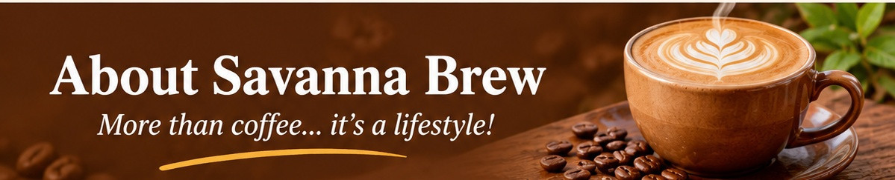

Savanna Brew Café opened in 2019 with one small espresso machine and a big dream: to celebrate Kenyan coffee. Founder Amina Otieno grew up on her grandparents' coffee farm in Nyeri and wanted to bring that flavour to the city. Today the café supports local farmers, uses eco-friendly packaging and hosts community events every month.
Meet Amina Otieno, the founder of Savanna Brew Café. Inspired by her childhood experiences on her grandparents' coffee farm in Nyeri, Amina turned her passion for Kenyan coffee into a welcoming café where people can enjoy quality coffee and connect with the community.
The values that guide everything we do.
Only freshly roasted, single-origin Kenyan beans.
Fair prices for farmers and a welcoming space for all.
Compostable cups and zero-waste pastries.